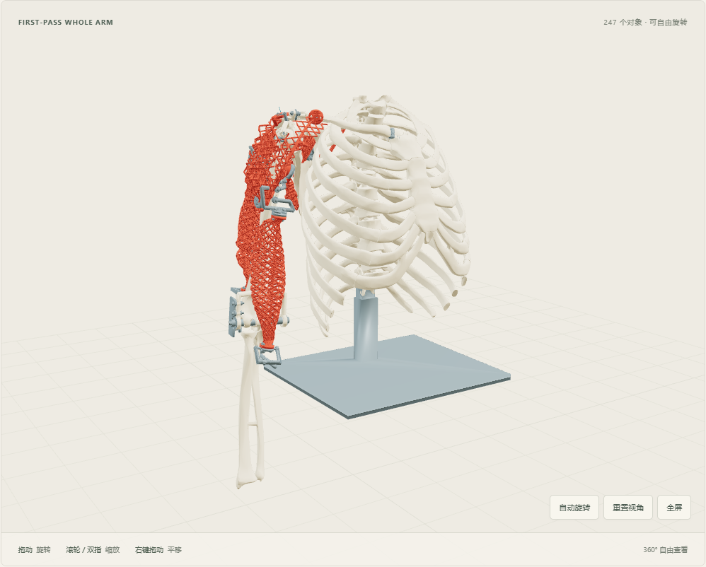
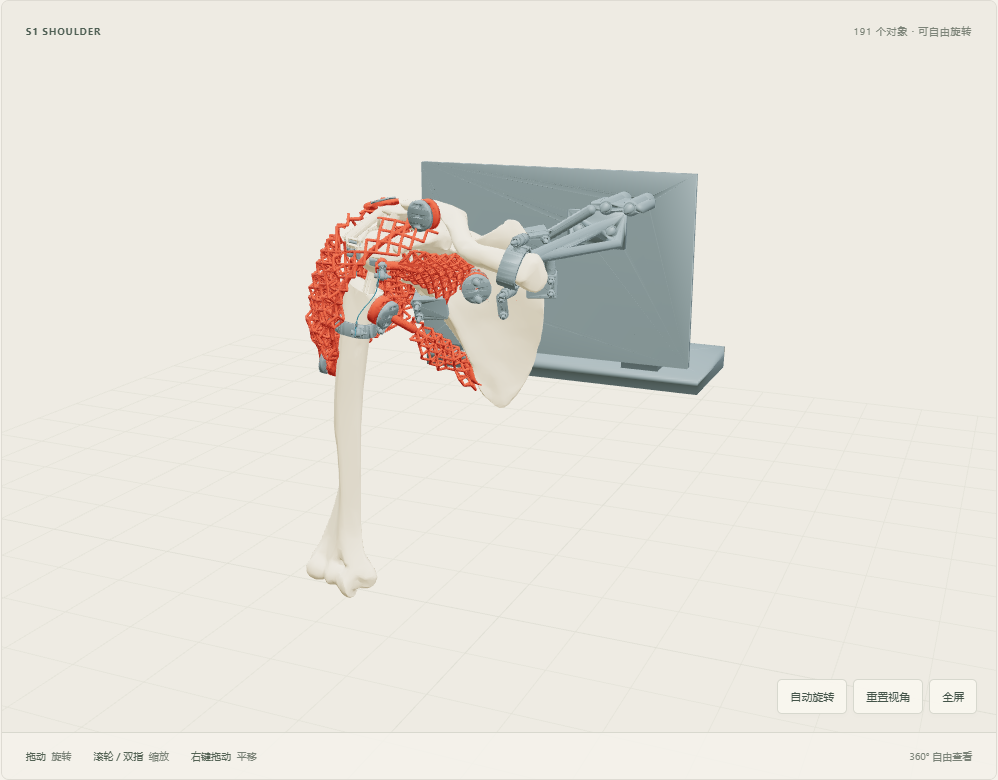
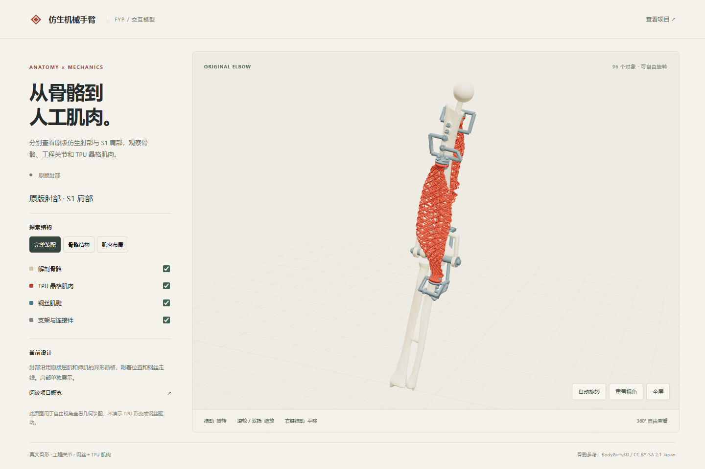

FINAL-YEAR PROJECT
Biomimetic
whole arm.
The first tabletop assembly integrates the thorax, scapula, engineered shoulder and elbow, eight TPU lattice muscles and a return spring.
Nine whole-arm actions
31-second MuJoCo replaySelect an action below to jump to its replay. Each movement starts at neutral. Scapular upward rotation and retraction use cable tension and return to neutral in simulation with ideal gravity compensation. The other seven replays use prescribed joint poses.
| Action | Travel | Verification |
|---|---|---|
| K1 Elbow flexion | 31.31° | Geometry |
| K2 Shoulder flexion | 41.70° | Geometry |
| K3 Shoulder abduction | 13.60° | Geometry |
| K4 Shoulder internal rotation | 90.00° | Geometry |
| K5 Shoulder external rotation | 10.00° | Geometry |
| K6 Scapular upward rotation | 11.79° | Cable pull and return |
| K7 Combined shoulder and elbow elevation | 17.33° | Geometry |
| Scapular protraction | 15.49 mm | Geometry |
| Scapular retraction | 2.86 mm | Cable pull and return |
During the separate active protraction trial, the shoulder centre moved 3.55 mm forward. After release it overshot neutral by 0.22 mm, where the serratus cable contacted the sixth rib and the guide envelope intersected the scapula. TPU deformation, simultaneous joint actuation and physical travel remain to be verified.

K6 scapular cable routing
Whole-arm MuJoCo replayAn extra guide carries the serratus anterior cable past the sixth rib. The white dashed line shows the neutral arm position in both views.
- Active scapular upward rotation
- 11.79°Up from 4.15° in the preceding routing trial
- Shoulder centre rise
- 30.9 mmAt the peak pose
- Geometric limit
- 27.50°Last passing sampled pose
This single-axis trial uses ideal gravity compensation with the glenohumeral joint and elbow held fixed. Beyond about 11.8°, the serratus cable changes torque direction. Protraction clearance and physical guide fit remain open.
K7 combined arm elevation
MuJoCo replayThe two views show the same outward and return motion, including the return spring, eight interpolated TPU meshes, local wires and cuff hardware.
- K7 humerus direction change
- 17.33°Relative to neutral
- K1 elbow flexion
- 31.31°In the separate eight-wire geometric replay
- K7 playback
- 27 frames14 outward samples plus the return
The replay uses prescribed joint poses and geometric TPU interpolation. Independent actuation, contact under load and physical travel remain to be verified.
Explore the design
360° model viewers
Tabletop whole-arm assembly
Rotate the neutral assembly and toggle the bones, hardware, eight TPU meshes and eight fixed-end wire paths.

S1-Y2 shoulder
Inspect the glenohumeral joint and shoulder muscle attachments.

Anatomical elbow
Inspect the original antagonistic muscles and their local cable paths.
OpenSim anatomy and cable layout
Compare 17 anatomical muscle bundles with 10 engineering routes in the neutral whole-arm assembly. Toggle human reference paths, cable routes and candidate attachment points.
The K1 rigid-geometry and cable check reached 31.31° of elbow flexion. The first-pass serratus anterior cable pays out along the sampled upward-rotation path. The later routing candidate is shown in the K6 replay above.
Design records
The first-pass records identify the local anchors, guide points and the first observed limit for each planned action. The earlier shoulder–elbow study remains available in the repository.